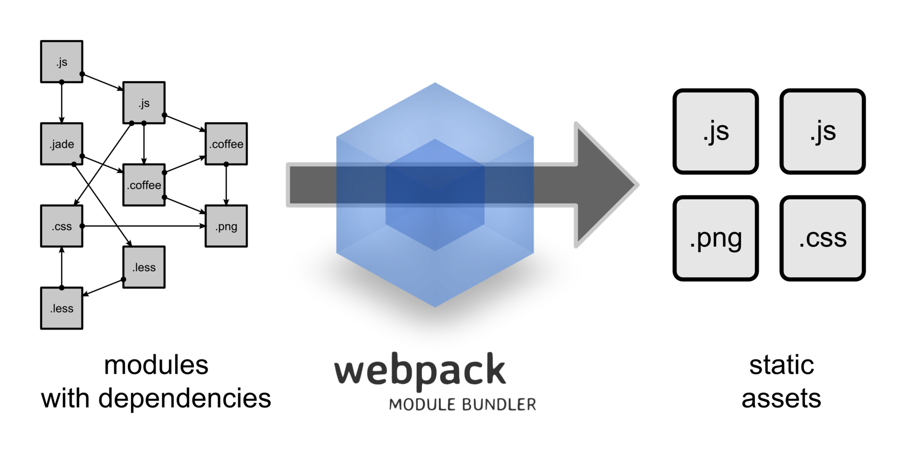

What is Webpack ?
Webpack is a static module module builder. This is important to understand, as Webpack does not run during your page, it runs during your development.
Webpack dependency graph
Webpack advantages
- great for working with single page applications
- can carry out advanced code separation
Webpack disadvantages
- difficult to understand his work at first time
- part of the documentation is outdated because of large number of changes
Abilityes
- bundle your resources
- watch for changes and performs tasks repeatedly
- transpose next-generation JavaScript to ES5 using Babel
- transpose CoffeeScript to JavaScript
- convert embedded images to data:URI
- makes it possible to use require() for CSS files
- can use webpack-dev-server and livereload
- can use Hot Module Replacement
- can split the output file into several files
- can perform Tree Shaking
Add this lines to package.json file:
{
//...
"scripts": {
"build": "webpack"
}
}
Webpack has 2 interfaces:
- webpack CLI – interface by default (installed as a part of Webpack and suitable for production builds).
- webpack-dev-server – server of Node.js (should be installed and suitable for development builds)
Webpack setups
Webpack setups by default:
- entry point: ./src/index.js
- output: ./dist/main.js
- production mode
Webpack configuration file - webpack.config.js
Example of webpack.config.js file
const path = require('path');
module.exports = {
entry: './path/to/my/entry/file.js',
mode: 'development',
output: {
path: path.resolve(__dirname, 'dist'),
filename: 'my-first-webpack.bundle.js'
},
rules: [
{
test: /\.js$/,
exclude: /(node_modules|bower_components)/,
use: {
loader: 'babel-loader',
options: {
presets: ['@babel/preset-env']
}
}
}
]
};
Webpack modes
Development mode:
- less optimized than production
- works faster
- does not delete comments
- provides more detailed error messages and solutions
- facilitates debugging greatly
Production mode:
- slower than development
- resulting JavaScript file is smaller
File watcher
{
//...
"scripts": {
"watch": "webpack --watch"
}
}
Source Maps
Devtool configuration property:
module.exports = {
/*...*/
devtool: 'inline-source-map',
/*...*/
}
Devtool most commonly used meanings:
- none
- source-map
- inline-source-map
Enabling HMR:
- WDS has to run in the hot mode to expose the hot module replacement interface to the client
- Webpack has to provide hot updates to the server and can be achieved using webpack.HotModuleReplacementPlugin
- The client has to run specific scripts provided by the WDS. They will be injected automatically but can be enabled explicitly through entry configuration
- The client has to implement the HMR interface through module.hot.accept
Add to configuration file
module.exports = {
/*...*/
devServer: {
// Don't refresh if hot loading fails. Good while
// implementing the client interface.
hotOnly: true,
// If you want to refresh on errors too, set
// hot: true,
},
plugins: [
// Enable the plugin to let webpack communicate changes
// to WDS. --hot sets this automatically!
new webpack.HotModuleReplacementPlugin(),
],
/*...*/
}
Lazy loading
Lazy loading (also called on-demand loading) is an optimization technique for the online content, be it a website or a web app.
Instead of loading the entire web page and rendering it to the user in one go as in bulk loading, the concept of lazy loading assists in loading only the required section and delays the remaining, until it is needed by the user.
Only one of the bundle files would be loaded, depending on which route the user takes to get to the site. This file would then lazily load the other modules, as needed, without loading its own. So if the user were to come in through a product, they would load bundle-product.js, which would boot up the page and then would only fetch home.js, category.js and checkout.js if needed.